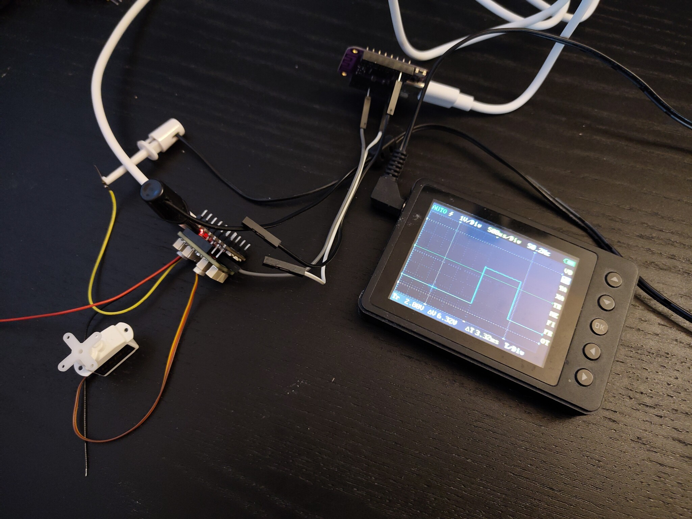

Firmware¶
Published on 2025-03-29 in Mite Servo.
I had the assembled PCB in my drawer for some time, but finally I got the energy to actually program them. I started by connecting everything in a convenient setup: the shield on an RP2040 Xiao, with an S2 Mini as a programmer, and a pocket scope for looking at the output signals.

I had a moment of doubt when trying to set up the I2C slave: the pins I have chosen are described as I2C2, and the CH32V003 only has one I2C peripheral. But a look at the alternate functions table in the programming guide clarified that I can indeed switch that peripheral to use those pins, so all is good. I’m using the ch32fun library, and it comes with a very conveniet I2C Slave example that already has the registers implemented, so I used that.
The only challenge left was setting up TIM1 and TIM2 timers to use the correct pins and phase. Fortunately with only 8 channels I don’t need to do any of the live alternate function switching that I tested previously, it’s just straight forward timer channels. However, I do plan to explore that later, for the 16-channel servo controller that I already have assembled.
In any case, the code is now in the project’s repository. The I2C inteface is simple: 16 1-byte registers, each pair encoding a 16-bit duty cycle for the given channel.